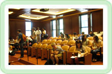
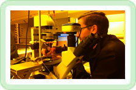

Scholarships
American Physical Society
- APS Scholarship for Minority Undergraduate Physics Majors - Any African-American, Hispanic American, or Native American U.S. citizen or permanent resident who is majoring or planning to major in physics, and who is a high school senior, college freshman, or sophomore is eligible to apply for the scholarship. $2000 for new recipients and $3000 for renewal students. Due Friday, Feb. 6, 2009
NASA
- Motivating Undergraduates in Science and Techonology (MUST) Program - A scholarship and NASA internship for undergraduates studying science, technology, engineering, or math. Open to all students, with an emphasis on underrepresented or minority students. Scholarship for up to half the student's tuition, plus a $5000 summer internship at a NASA center. Due Feb2, 2009for the 2009-2010 scholarship and summer internship.
National Oceanic and Atmospheric Administration
American Institute of Aeronautics and Astronautics
- AIAA Foundation Undergraduate Scholarship Program - The AIAA Foundation undergraduate scholarship program awards 30 scholarships of $2000 – $2,500 to college sophomores, juniors, and seniors each year. All participants can apply to renew the scholarships annually until graduation. Application request deadline is January 16, 2009. The application must be received by January 31, 2009
University Space Research Association
- USRA Scholarships - For students with two years of college credits studying physics or engineering, and interested in space research. $1000 annually. Due May 1, 2008.
Society of Physics Students Scholarships
- SPS Leadership Scholarship - Awarded annually to undergraduate students applying in at least their junior year of study, in the amounts of one top scholarship of $5,000, and a number of $2,000 scholarships. The awards are based on scholarship, potential, and activity in SPS. Due Feb. 15, 2009.
- Herbert Levy Memorial Scholarship - Based on scholarship, SPS participation, and financial need, to one student, in the amount of $2,000. Open to any SPS member in any year of undergraduate study. Established in memory of the late Dr. Herbert Levy, by Margaret Sussman Levy. Due Feb 15, 2009.
- SPS Future Teacher Scholarship - Based on scholarship and SPS participation, this $2,000 award is presented annually to an SPS member who is participating in a teacher education program and who plans to pursue a career in physics education. Due Feb. 15, 2009.
Barry M. Goldwater Scholarship
- Open to college sophomores and juniors studying biochemistry, biology, computer and information science, environmental science, general science, geological sciences, mathematics, and mathematics and computer science. $7500 annually. Must be nominated by UO to be considered in the national application process. Internal applications due late October. ContactDr. Dietrich Belitz, Associate Dean of the College of Arts and Sciences, for more information.
McNair Scholars
- A scholarship program for undergraduate juniors and seniors intending to continue on to graduate school. Includes:
- $2800 summer research stipend with classes to enhance research and writing skills
- Graduate funding workshops
- GRE test preparation
- Graduate school application assistance
- Academic advising
- Travel to conferences and to visit prospective graduate schools
- Tuition support
Due Nov. 2, 2007. Contact Gail Unruh, Director, for more information.
Internships
NASA - There are lots of NASA internships, and lots of ways to go about getting one. Below is a list of just a few of them.
- NASA Undergraduate Student Research Project - A 10 week paid summer internship at a NASA center, open to undergraduate sophomores, juniors, and seniors studying science, math or engineering. $6000 plus transportation. Due Jan 23, 2009.
- NASA OSSI - An application for a pool of NASA internships and scholarships.
- Motivating Undergraduates in Science and Techonology (MUST) Program - A scholarship and NASA internship for undergraduates studying science, technology, engineering, or math. Open to all students, with an emphasis on underrepresented or minority students. Scholarship for up to half the student's tuition, plus a $5000 summer internship at a NASA center. Due Feb 2, 2009 for the 2009-2010 scholarship and summer internship.
Society of Physics Students Internships
- SPS internships are broad-based learning opportunities for undergraduate physics majors in the areas of scientific research and outreach/policy. Internships at organizations like NASA, NIST, AIP, AAS, APS, AAPT, etc. Includes a stipend, paid housing, and paid airfare to Washington DC. Application due Feb 1, 2009.
SLAC Internship
- Intern at the Standford Linear Accelerator! Applicants need at least one year of college-level physics to be selected by SLAC. Students who are majoring in physics, engineering, or computer science are encouraged to apply. Includes stipends, travel, and housing for the summer internship. Due Feb 1. 2009.
Department of Energy Internships
REU Programs
Research Experiences for Undergraduates (REU)
Astronomical Sciences
Physics
Materials Research
Earth Sciences
Mathematical Sciences
Engineering
Chemistry
Biological Sciences
Computer and Information Science and Engineering
|